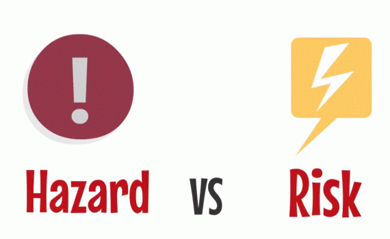
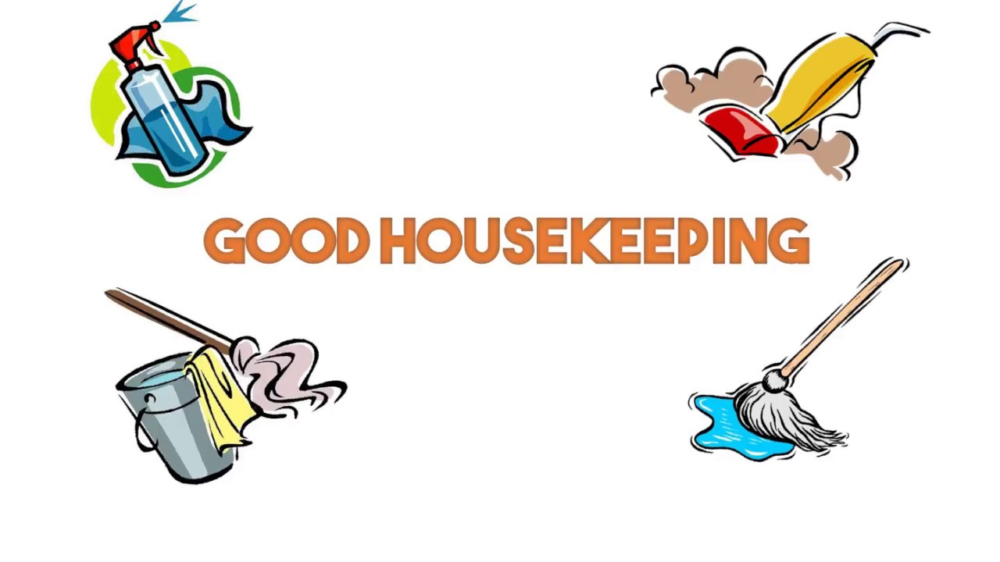

Fablab Safety
Fab Lab Safety Instruction and Certification Program is a compulsory for SP students to be trained and safety certified before allowing to access and work workshops, Fab Lab or labs/studio with fabricating facilities.
In the event of emergency, assistance may be summoned:
For Ambulance call 995
For SCDF call 995
For Police call 999
For all emergencies and incident reporting call SP Emergency hotline 6772-1234
When making an emergency call, provide essential information such as:
Workplace Safety and Health
3 Principles of WSH Act Framework
- Instilling greater industry ownership of OccupationalSafety & Health Standards.
- Reducing risk at source
- Preventing accidents through heavier penalties
4 Key Features of WSH Act
- It places the responsibility for workplace safety on all stakeholders along lines of control at the workplace.
- It focuses on Workplace Safety & Health systems and outcomes, rather than merely on compliance.
- It facilitates effective enforcement through the issuance of remedial orders.
- It imposes higher penalties for non-compliance and risky behaviour.
Proper attire for males
-Long hair must be tied
-Keep adornment properly
-No loose items allowed (Hanging necklace)
-T-shirt, No loose attire, No long sleeve
-Hands must be free of adornment
-Long pant
-Cover shoes (anti-slip sole if possible)
Hazzards associated with machinery and workplace
Hazzard is something that can cause injury.
Risk is the likelyhood of the hazzard causing an injury and the severity of an injury.
Three basic motion of machinery
Hazzards associated due to machinery motions
- Entanglement hazards
- Cutting hazards
- Impact hazards
- Shearing hazards
- Crushing hazards
- Draw-in hazards
- Friction and abrasion hazards
Danger areas of machinery:
Parts which move or transmit power
Parts that do the work
Good Housekeeping Practices
- Always return the tools back to their designated positions in the tool racks after use.
- Always keep the workplace neat and orderly after use.
- Always clear away the debris and chips off the machines or workbenches after use.
- Always bring unused or leftover materials to the recycle area.
Benefits of good housekeeping